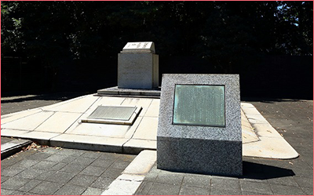
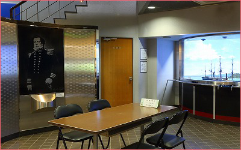
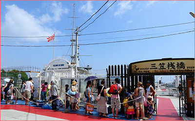
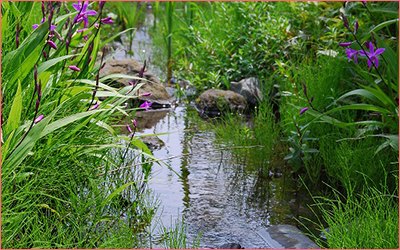
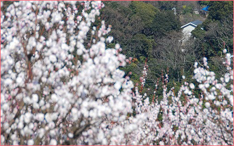
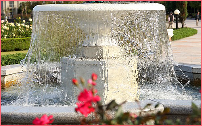
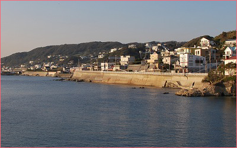

よこすかぐらすバーチャルツアー
あなたのお部屋にいながらよこすかの旅を満喫できます。YouTube動画による様々なミニツアーやzoomイベントなどのコンテンツをお楽しみください。

追浜・田浦
例夏島公園
夏島町の工業地帯にある緑地です。園内には、市営唯一のドッグラン広場や第三海堡施設があります。また、夏島緑地前道路の反対側には、貝山自然教育園としての貝山緑地があります。

久里浜
例ペリー公園
久里浜海岸のペリー公園内にはペリー上陸記念碑があります。 この碑は、日本の開国を求めて来航したアメリカ海軍提督マシュー・カルブレイス・ペリーが嘉永6年6月9日（新暦1853年7月14日）に久里浜海岸に上陸したことを記念して建てられたものです。

汐入・横須賀中央・逸見
例三笠桟橋
東京湾に浮かぶ、唯一の自然島です。 釣り・海水浴・バーベキューなど、四季を通してアウトドア・アクティビティを楽しめます。 面積は横浜スタジアムのグランドの約4倍。 三笠桟橋からの約１０分の船旅で、気軽に訪れることができます。

野比・長沢・津久井浜
例横須賀リサーチパーク
光の丘水辺公園からメインストリート沿いに、小さな小川が流れています。これは、自然を再生しようという考えに基づいて㈱矢崎総業技術研究所が作った、循環式の人工の小川です。さまざまな水辺の植物が植えられ、メダカやハヤが元気に泳ぐ姿が見られます。

よこすかぐらすAR
（スマホ専用）
専用のアプリを使用して、現実の風景にその場所の歴史や見どころ情報が重なって見えます。旅が時空を超えて広がります。

追浜・田浦
例田浦梅の里
約2,700本のウメが咲きほこる梅の名所で、「かながわ花の名所100選」にも選ばれています。面積は約6,000平方メートルあり、三浦半島でただひとつの梅林として知られています。

汐入・横須賀中央・逸見
例ヴェルニー公園
港に沿って続くヴェルニー公園のボードウォークからは、停泊する自衛艦や米海軍の潜水艦を眺めることができます。 春と秋には公園内に植えられた約2000本のバラが咲き誇ります。横須賀製鉄所の建設に貢献したフランス人技師ヴェルニーの功績を伝えるヴェルニー記念館も開設されてます。

秋谷・佐島・武山